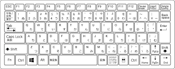

ブック&シート
|
ブック |
シート |
| 新規作成 |
Shift + F11 |
Ctrl + N |
| 削除 |
Alt + E → L |
Ctrl + W |
| 切り替え |
Ctrl + Fn + ↑ ↓ |
Ctrl + Tab |
コピー&ペースト&切り取り
| コピー |
Ctrl + C |
| ペースト |
Ctrl + V |
| 切り取り |
Ctrl + X |
次に進む&前に戻る
| 次に進む |
Ctrl + Y |
| 前に戻る |
Ctrl + Z |
保存
| 上書き保存 |
Ctrl + S |
| 名前を付けて保存 |
F12 |
セルの挿入と削除
| セルの挿入 |
Ctrl + Shift + + |
| セルの削除 |
Ctrl + ─ |
セルの移動
| 表の端のセルへ移動 |
Ctrl + ↑ ↓ ← → |
| 特定のセルにジャンプ |
Ctrl + G , F5 |
セル範囲の選択
| 列の選択 |
Ctrl + Space |
| 行の選択 |
Shift + Space |
| 表全体の選択 |
Ctrl + Shift + : |
| 選択範囲をまとめて選択 |
F8 |
| 選択範囲を個別に選択 |
Shift + F8 |
セルの装飾
| 太字 |
Ctrl + B , Ctrl + 2 |
| 斜体 |
Ctrl + I , Ctrl + 3 |
| アンダーバー |
Ctrl + U , Ctrl + 4 |
| 取り消し線 |
Ctrl + 5 |
| 外枠罫線 |
Ctrl + Shift + 6 |
| 罫線の削除 |
Ctrl + Shift + \ |
セルの表示形式
| 通常の表示形式 |
Ctrl + Shift + ^ |
| パーセント表示 |
Ctrl + Shift + 5 |
| 桁区切り記号 |
Ctrl + Shift + 1 |
| 通貨表示 |
Ctrl + Shift + 4 |
| 表示形式一覧 |
Ctrl + 1 |
テンプレ入力
| 日付 |
Ctrl + ; |
| 時刻 |
Ctrl + : |
| 上のセルデータを入力 |
Ctrl + D |
| 左のセルデータを入力 |
Ctrl + R |
| 上のセルの数式を入力 |
Ctrl + Shift + 7 |
| 同じ列のデータリスト参照 |
Alt + ↓ |
その他
| ヘルプ |
F1 |
直前の動作を繰り返す
絶対参照と相対参照の切り替え |
F4 |
| 再計算 |
F9 |
| クイック分析 |
Ctrl + Q |
| フィルター |
Ctrl + Shift + L |
| データの検索 |
Ctrl + F |
| データの置換 |
Ctrl + H |
| 合計の入力(SUM関数) |
Alt + Shift + = |